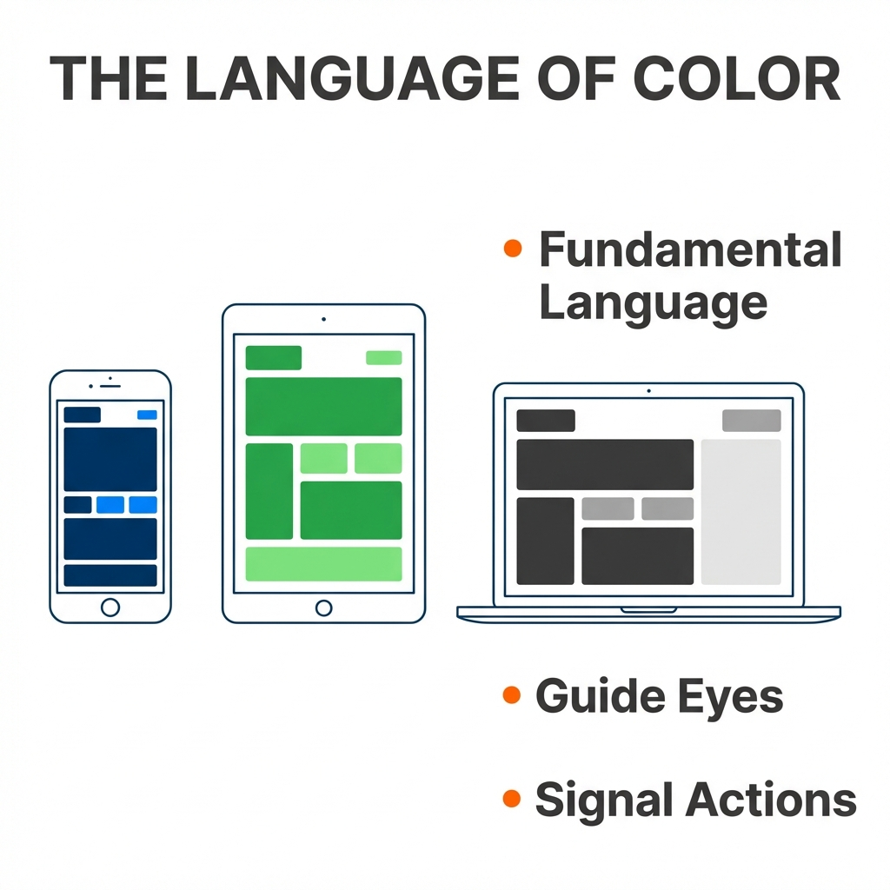
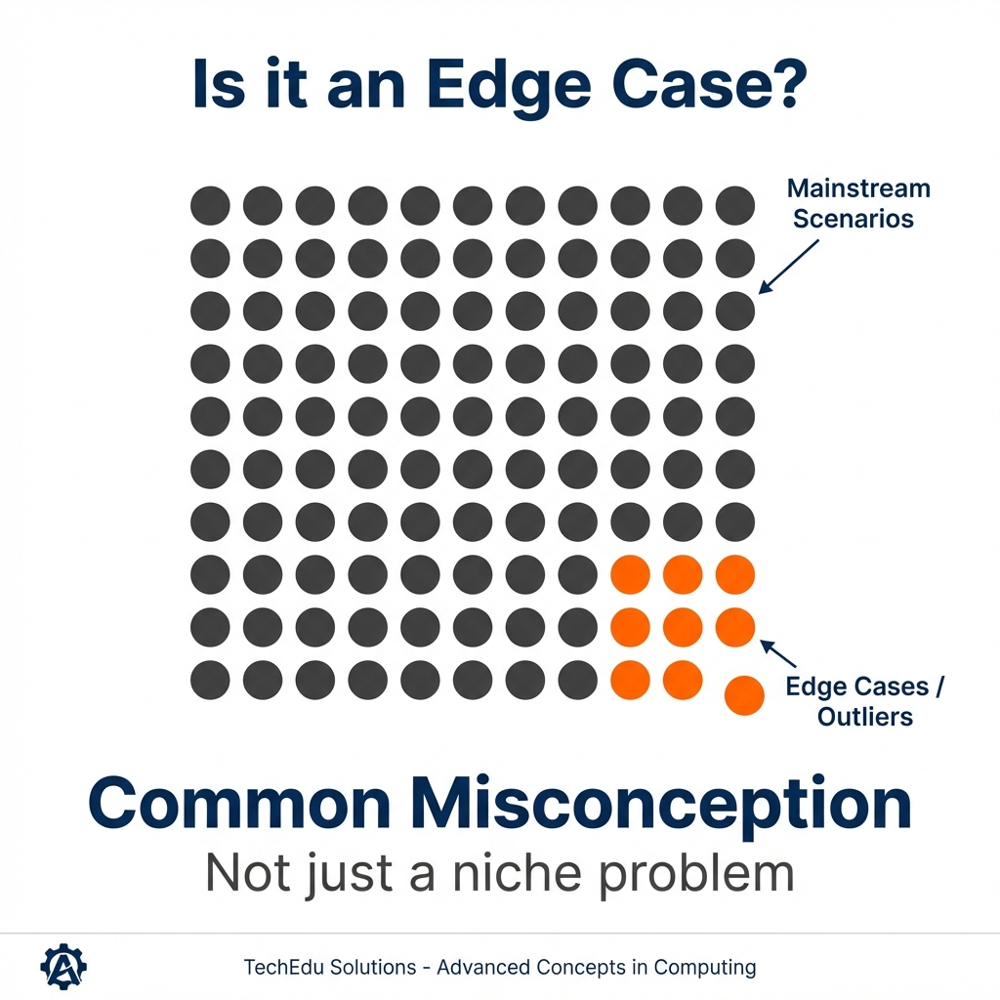

AI Storyboard Variants
Note: Generating high-fidelity AI slides is resource-intensive.
Below are the initial scenes generated with the new visual system.
Timestamp: 0:00:00
Slide Variant: Intro / Digital Screens

Okay, so let's talk about something we see every single day. Color on our screens, the blues, the greens,
the grays. They aren't just there to look pretty. They're fundamental language that helps us get around in
our digital world, they guide our eyes, they signal what we can do.
Timestamp: 0:00:43
Slide Variant: Edge Cases / Statistics

Now, it's really easy to think of this stuff as you know, an edge case, something that only affects a tiny
number of people. But the truth is it's way more common than you'd think. The web Content Accessibility
Guidelines
Timestamp: 0:00:52
Slide Variant: WCAG & 15% Statistic
or WCAG, which is basically the global rule book for this, tells us that about 15% of working age adults
have some kind of vision impairment. That's a huge number of people who might be struggling with designs
that don't think about how color is perceived.
Timestamp: 0:01:38
Slide Variant: Contrast / Readability
how do we actually start breaking down these barriers? Well, the first and most fundamental rule is just
about making sure people can read the words on the screen, and it all boils down to one simple concept.
Contrast. Simply put, Contrast is just the difference in brightness between two colors next to each other.